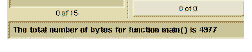

Browser Menu Creation Commands
Access menu commands let you add new menus to the Browser as well as to select existing menus in the Browser. These select menus are:
• Category
• Query
• Action
The following table shows a list of Access menu commands:
|
Menu Command |
Description |
|
add_menu |
Adds a menu to the Browser’s menu bar; allows cascading menus. add_menu menu_name.submenu_1_name.submenu_2_name |
|
add_item |
Adds an item to one of the Browser menus where command_string is the action initiated by the item. add_item menu item_name command_string |
|
add_separator |
Adds a separator to the specified menu. add_separator menu |
The add_menu command has its own syntax:
add_menu tag
Its associated command, add_item, uses similar syntax:
add_item menu tag command [selection] [display]
In these commands:
• menu (add_item only) is the parent menu name.
• tag refers to the name you want to appear in the menu.
• command refers to the Access command you want the menu operation to invoke (you can use Tcl procedures).
• selection (optional) is a Browser-based selection that acts as input for an Access command. Choose from the selection options to specify which Browser functionality Access uses:
• -selection, (default) the current selection in the Browser
• -scope, the scope as established in the Project text field
• -filter, all entities in the current selection’s column
• -none, no selection
• -optional, the current selection, allows no selection
• display (optional) refers to Access command output destination. Works only with the Browser; display options include:
• -result shows output in the Results column
• -element shows output in the Elements column
If you do not specify a column, Access sends output to the last, non-active column (sending it to the Results column if data just appeared in the Elements column).
Non-Information Model results appear in the status bar at the bottom of the Browser.
